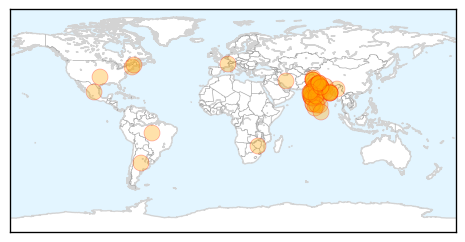

Swine Flu
30-Day Web Trend
10 alerts, 11 warnings

30-Day Twitter Trend
0 alerts, 0 warnings

Article Locations
Article Confidences

Top Articles:
- 1.000
- Swine flu claims 38 more lives, death toll now 812
- 1.000
- Swine flu claims 38 more lives
- 1.000
- Swine flu claims 38 more lives, death toll crosses 800
- 1.000
- The New Indian Express
- 1.000
- H1N1 Swine flu claims 38 more lives, death toll crosses 800
- 1.000
- 31 more die, toll from swine flu rises to 774
- 0.999
- Haryana doctors at odds over swine flu
- 0.999
- Haryana doctors at odds over swine flu
- 0.999
- Haryana doctors at odds over swine flu
- 0.999
- Haryana doctors at odds over swine flu
- 0.999
- Haryana doctors at odds over swine flu
- 0.999
- Haryana doctors at odds over swine flu
- 0.999
- Haryana doctors at odds over swine flu
- 0.999
- Haryana doctors at odds over swine flu
- 0.999
- Haryana doctors at odds over swine flu
- 0.999
- Haryana doctors at odds over swine flu
- 0.999
- Haryana doctors at odds over swine flu
- 0.999
- Swine flu scare: Doctors warn against social media panic
- 0.999
- Swine flu cases swell despite rise in temperature in city
- 0.998
- Uttar Pradesh: Swine flu cases surge to 250
- 0.998
- Delhi hospital faces medicine shortage as doctors say children most at risk of H1N1
- 0.998
- Swine Flu H1N1: One more dies of swine flu in Kashmir, toll reaches 5
- 0.998
- 1 more swine flu death in Chhattisgarh, toll reaches 4
- 0.997
- Killer swine flu strikes India
- 0.997
- India makes key ingredient in 'world's most wanted' swine flu drug
- 0.996
- Child death takes swine flu toll in state to four
- 0.996
- H1N1 Swine flu: Vaccine 'dries up' in Kashmir, doctors at risk
- 0.995
- Read Health News & Articles at TheHealthSite.com
- 0.995
- Swine flu: Infants at higher risk at Sucheta Kriplani Hospital in Delhi : India, News
- 0.994
- Swine flu claims 774 deaths with 12,963 infections
- 0.994
- WhatsApp, Facebook new age weapons to ‘fight’ swine flu
- 0.993
- Swine flu return feared during monsoon months
- 0.992
- Private labs overcharging for swine flu tests issued notices
- 0.992
- Doctors tested positive for swine flu virus in Kashmir
- 0.991
- H1N1 Swine flu: Six cases in Jammu; doctors say not enough supply of medicines
- 0.990
- Swine flu claims seven more lives in Rajasthan, toll 212
- 0.987
- 5 new swine flu cases in Bengal
- 0.987
- Health Minister assures Nirmal on support for fighting Swine flu in J&K
- 0.987
- Swine Flu Kills 10 More in Gujarat; Toll Reaches 207
- 0.986
- Swine flu surge: 38 test +ve in a day
- 0.985
- Nine IPS trainees at NPA test positive for swine flu
- 0.984
- H1N1 cases surge past 3,000-mark in Gujarat
- 0.983
- Assembly Speaker, IAS officer down with swine flu – THE SEN TIMES
- 0.979
- Congress workers distribute medicines to combat swine flu in Gujarat
- 0.978
- Gujarat: Congress workers distribute medicines to combat swine flu
- 0.976
- Gujarat: Congress workers distribute medicines to combat swine flu
- 0.971
- After weeks of ‘widespread’ flu, New Hampshire officials urging vigilance on healthy habits
- 0.970
- AAP Delhi government had fixed the swine flu test price at Rs. 4500
- 0.962
- Suspected H1N1 Victim Dies of Heart Attack
- 0.952
- Congress workers distribute free masks, medicines to combat swine flu
Showing top 50 articles...
Top Tweets:
-
No tweets found for Feb 22, 2015